COSMOS
Make CHOMP's covariant gradient aware of orbital mechanics — so a generic path smoother becomes a fuel-optimal orbital maneuver planner. Now generalized to time-varying dynamics around eccentric orbits.
Smoothing the wrong thing
Standard trajectory smoothing minimizes acceleration. But in orbit the dynamics already supply acceleration for free — so penalizing raw acceleration optimizes a quantity that has little to do with fuel.
A working prototype, already validated
Every claim below is reproduced by a script in the repository.
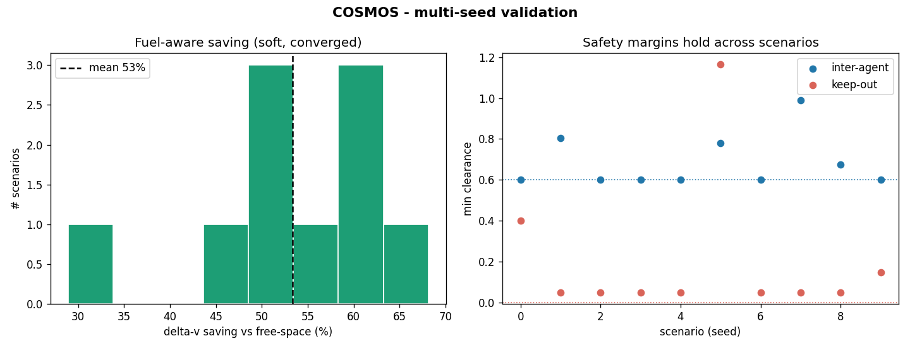
Three pieces, one research arc
Metric → optimality → safety-in-the-metric. Each piece reinforces the next.
Fuel-aware CW metric
Replace \(A^{\top}A\) with \(B^{\top}B\) so the covariant gradient minimizes true thrust energy. The planner spontaneously discovers natural coast arcs.
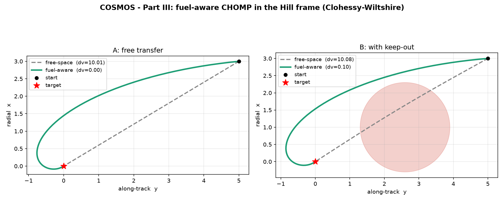
Provable optimality
A closed-form LQ / Gramian optimum as ground truth. Fuel-aware CHOMP hits 1.00×; a naive Euclidean keep-out projection balloons to 15×.
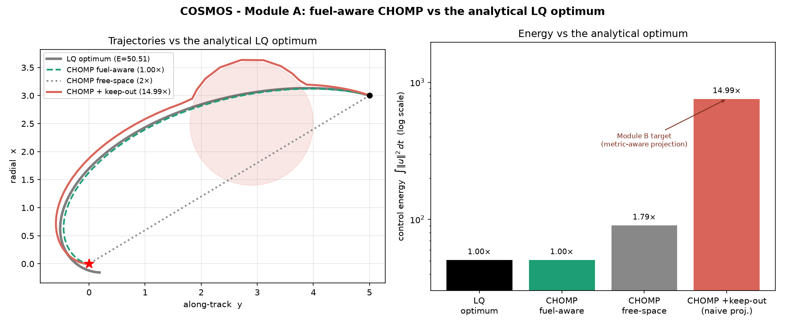
Metric-aware safety
Project keep-outs in the fuel metric, not Euclidean space. A closed-form Riemannian projection cuts the premium 15× → 1.69×, still collision-free.
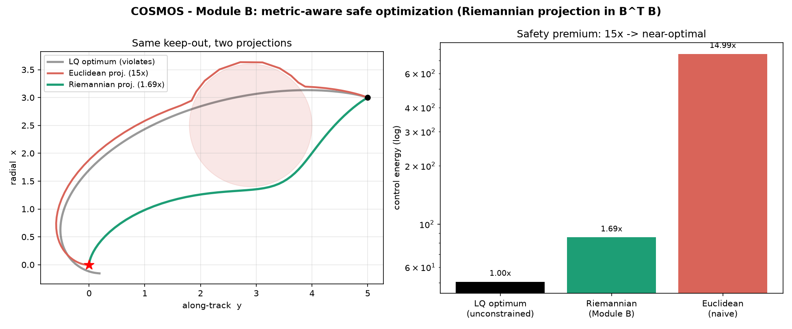
Pushing the idea further
Two additions that answer the two hardest questions a reviewer asks: when does choosing the metric actually matter? and is the optimality a property of the method or of the tuning?
A time-varying metric for eccentric orbits
Clohessy–Wiltshire assumes a circular reference orbit. Around an eccentric orbit the relative dynamics become time-varying, and a CW-“passive” relative orbit drifts by many times its own amplitude per revolution. Feeding the planner the correct time-varying block \(G(t)\) — the same construction, nothing else changed — and scoring against the full nonlinear relative dynamics, the Δv saving climbs from ~0% at \(e=0\) (so CW is validated for circular LEO) to ~16% at \(e=0.3\). The metric matters exactly when the dynamics do.
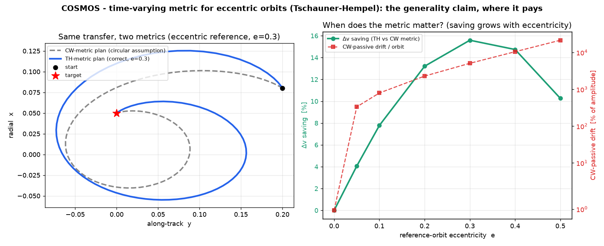
The preconditioner is the exact Gauss–Newton step
The fuel cost is exactly quadratic, so its Hessian is \(M = B^\top B\) — precisely the covariant preconditioner. One unit step is therefore a full Newton step: from any start it reaches the closed-form optimum to machine precision in a single iteration. The “1.00× optimal” headline is a property of the method — the metric is the exact inverse Hessian — not an artifact of step-size or iteration budget. COSMOS is a second-order solver for the LQ transfer wearing CHOMP's covariant clothes.
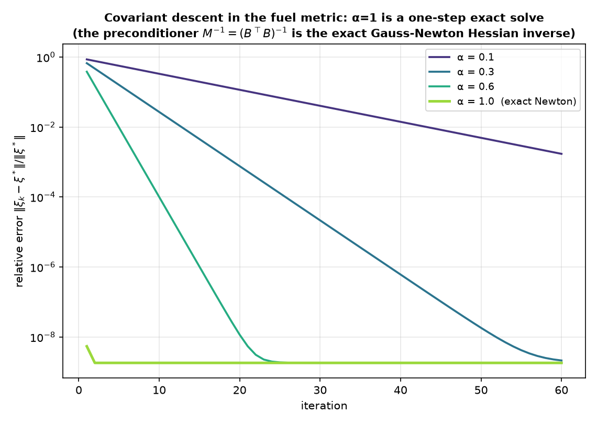
Metric-aware inter-agent safety
Module B avoided static keep-outs cheaply; a swarm's hazard is the other agents. A coupled Riemannian projection enforces \(\lVert x_i(t)-x_j(t)\rVert \ge r\) in the joint fuel metric — strictly collision-free at ~1.3× lower Δv than the metric-blind push.
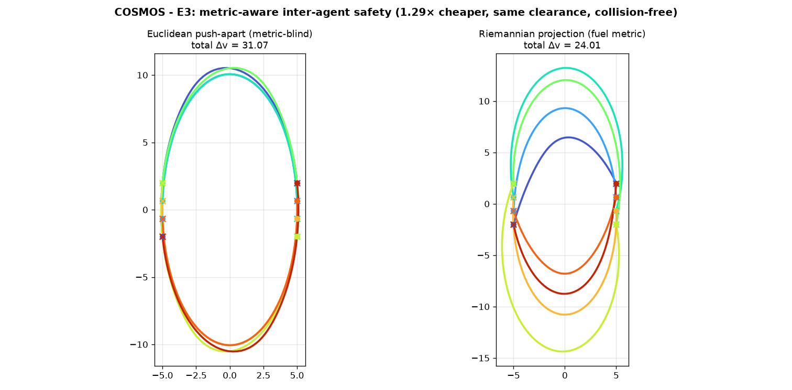
MPC-ready (receding horizon)
Every other result is open-loop. Wrapped in a re-planning loop, closed-loop control cuts the terminal error ~10× under process noise for a modest Δv premium — each re-plan is one Gauss–Newton step, so the metric is MPC-ready.
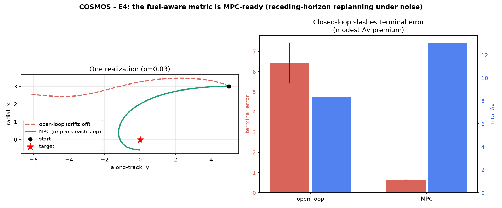
Chance-constrained keep-outs
Under navigation uncertainty \(\sigma\), inflate the radius by \(\Phi^{-1}(\beta)\sigma\) to guarantee “stay outside with probability \(\ge\beta\)” — enforced by the same Module B projection. Monte Carlo shows the realized safety tracks the target.
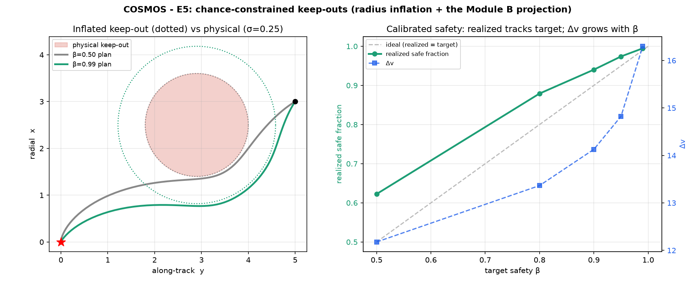
Validity map — an honest regime study
Not a cherry-picked number: a sweep over (eccentricity × transfer amplitude), scored under the full nonlinear dynamics, showing the eccentric-metric saving is a robust regime that grows with the dynamics mismatch — and documenting where the linear model itself stops being valid.
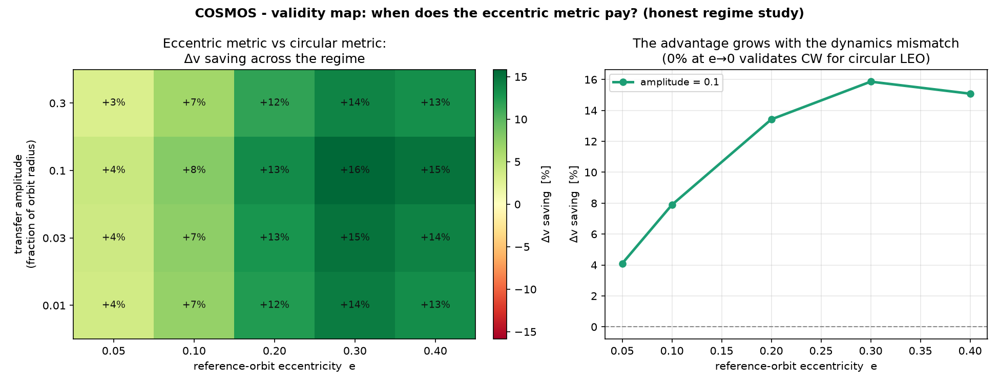
A realistic SI mission
A four-chaser rendezvous on a real eccentric orbit (perigee 600 / apogee 8000 km), formation at the hundred-metre scale. Credible numbers: ~1.1 m/s per chaser, a +19.5 % propellant saving from the correct metric, scored under the full nonlinear dynamics.
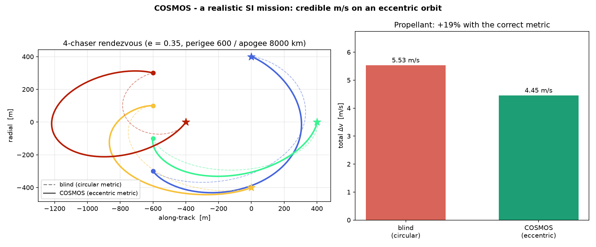
Numerical robustness
Across \(N\) from 20 to 200, \(\mathrm{cond}(M)\) grows \(\sim N^2\), yet the Cholesky preconditioner keeps the descent exact (\(\sim 10^{-10}\) vs the closed form) and the LQ ratio within a fraction of a percent. The headline numbers hold away from the single tested setup.
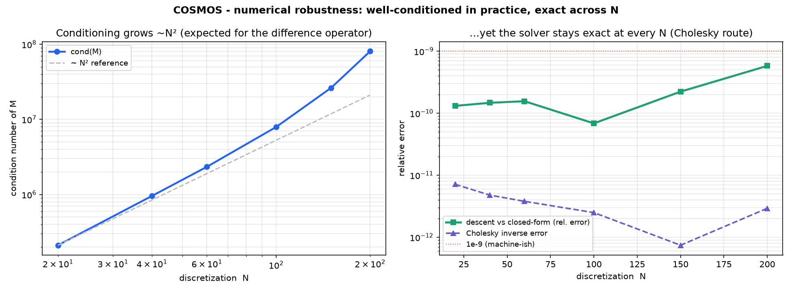
Is it actually good — and fast?
The base problem is linear-quadratic, so a fair critic asks: why a planner when the LQ optimum is closed-form? Because the LQ form can't represent a keep-out. Against the baselines a reviewer would demand — the analytic LQ optimum, and a general-purpose SQP solver (scipy SLSQP) on the exact constrained problem — COSMOS is near-optimal, strictly feasible, and scales far better.
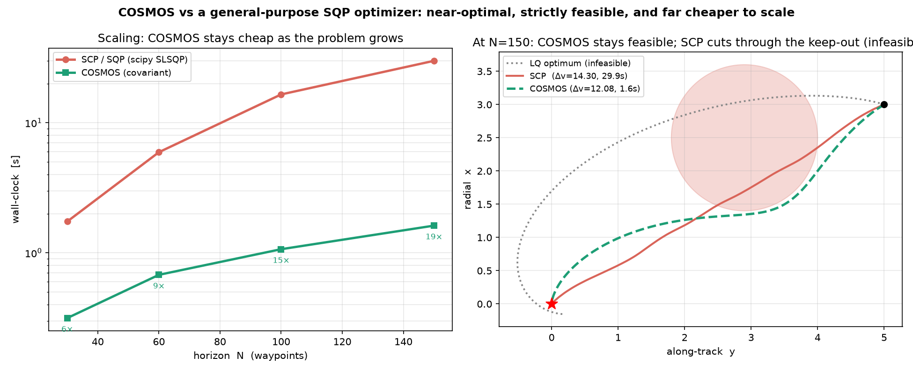
One command, built on layers
The science is staged into self-contained modules; a single driver composes them into the mission.
cosmos command)Install & run in a minute
A standard Python package — install it, then call the cosmos command.
# clone & install (editable) git clone https://github.com/stanislaw-sommerfeld/COSMOS.git cd COSMOS python -m venv venv && source venv/bin/activate pip install -e . # add ".[viz]" for the pygame viewer
# run the whole framework at once (figures + results + tests) python run_all.py # ...or the unified driver — configured by flags cosmos --units si # the mission, real units cosmos --metric free --safety none --assign fixed # dynamics-blind baseline cosmos --scenario debris --dim 3 --units si # 3D debris rendezvous # reproduce the headline figures python -m cosmos.chomp_cw # the contribution python -m cosmos.cosmos_optimal # 1.00× LQ optimum + the 15× pitfall python -m cosmos.cosmos_safe # 15× → 1.69× safety fix
The mission, visualized
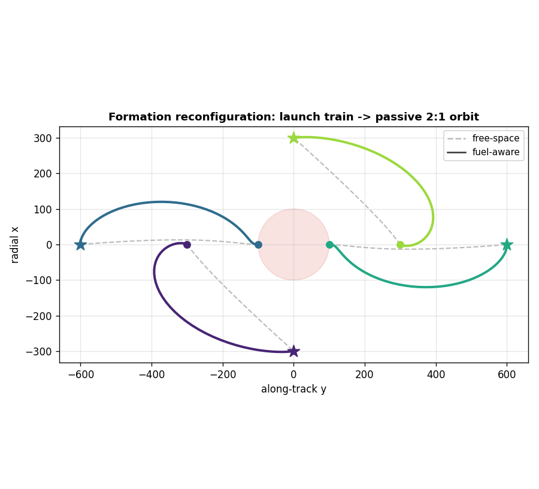
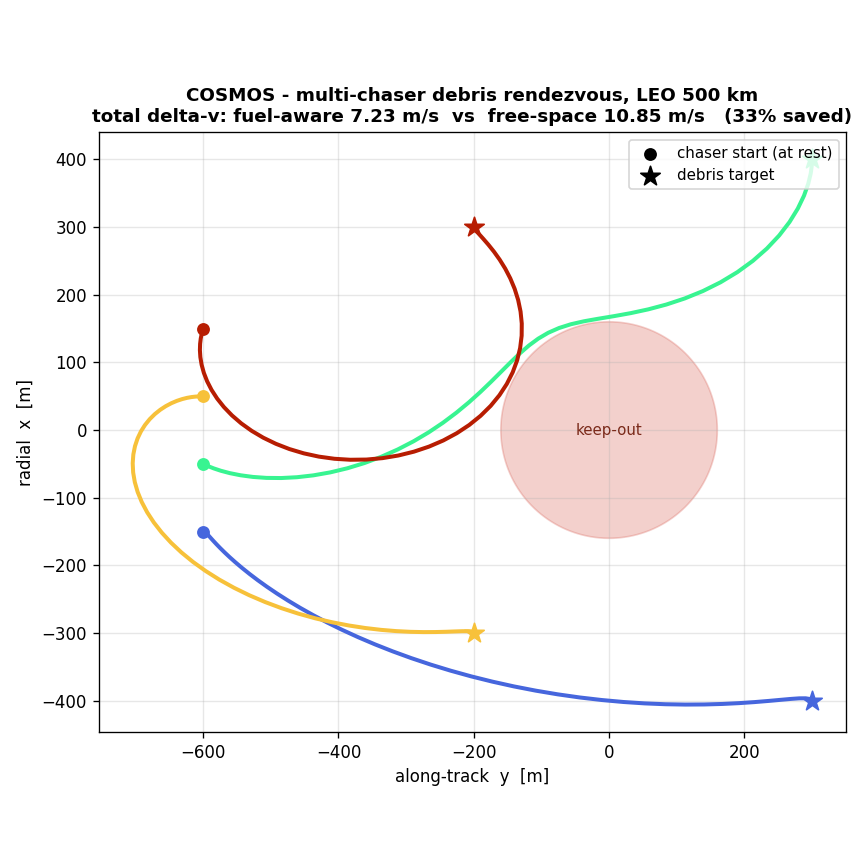
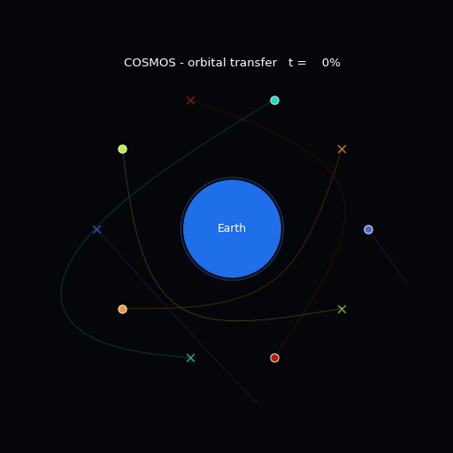
Prior work this builds on
COSMOS stands on established results in motion planning, optimal control, and astrodynamics — the contribution is the bridge between them.
- N. Ratliff, M. Zucker, J. A. Bagnell, S. Srinivasa. CHOMP: Gradient optimization techniques for efficient motion planning. IEEE ICRA, 2009.
- M. Zucker, N. Ratliff, A. Dragan, et al. CHOMP: Covariant Hamiltonian optimization for motion planning. Int. J. Robotics Research, 2013.
- W. H. Clohessy, R. S. Wiltshire. Terminal guidance system for satellite rendezvous. J. of the Aerospace Sciences, 1960.
- S. A. Schweighart, R. J. Sedwick. High-fidelity linearized J2 model for satellite formation flight. J. Guidance, Control, and Dynamics, 2002.
- J. Tschauner, P. Hempel. Rendezvous with a target in an elliptical orbit. Astronautica Acta, 1965.
- A. E. Bryson, Y.-C. Ho. Applied Optimal Control (LQ regulator, controllability Gramian). Hemisphere, 1975.
- H. W. Kuhn. The Hungarian method for the assignment problem. Naval Research Logistics Quarterly, 1955.
- S. Boyd, N. Parikh, E. Chu, B. Peleato, J. Eckstein. Distributed optimization and statistical learning via the ADMM. Found. & Trends in ML, 2011.
- J. Nocedal, S. J. Wright. Numerical Optimization (Gauss–Newton, Levenberg–Marquardt, SQP). Springer, 2006.
- X. Liu, P. Lu, B. Pan. Survey of convex optimization for aerospace applications (sequential convex programming for trajectories). Astrodynamics, 2017.
- H. Schaub, J. L. Junkins. Analytical Mechanics of Space Systems (relative orbital motion, formation flying). AIAA, 2018.